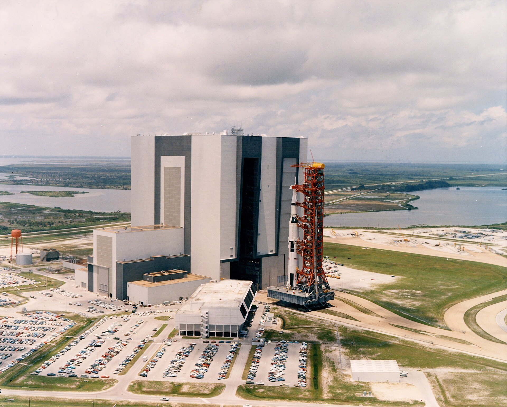

The Saturn V remains the most powerful rocket ever to carry humans to another world. It never suffered a catastrophic failure. Every part of the Apollo program depended on this one machine working, and it did: twelve missions flawlessly, and one uncrewed test flight whose engine problems were diagnosed, fixed, and never seen again.

The rocket, stage by stage
The Saturn V was a three-stage machine, each stage a rocket in its own right, stacked like the floors of a tower. It dropped each empty stage as it climbed. This diagram is drawn to scale in height (the width is enlarged so you can read it).
What it could carry
The Saturn V's job was lifting mass — and it lifted more than any rocket before or since, all the way to Apollo. Its capacity: about 140 tonnes to low Earth orbit, and 43.5–48.6 tonnes on a trajectory to the Moon — which had to include the Apollo command module, the service module, the lunar module, all the fuel for coming home, and three humans. On top of the stack rode the Apollo spacecraft: crew capsule, lunar lander and the pencil-thin launch escape tower, together about 25 metres of the rocket's total 110.6.
Saturn V by the numbers
The six minutes that mattered
Liftoff to orbit took about twelve minutes, but the drama was in the first three. The S-IC burned for roughly 150 seconds, pushing the rocket through the thickest air — at burnout, sixty-seven kilometres up, it had burned through about 2,000 tonnes of kerosene and liquid oxygen. Explosive bolts fired, and the empty stage fell away into the Atlantic. The S-II's five hydrogen engines then took over for about 395 seconds — the hydrogen so cold (−253 °C) that the stage's insulation was a major engineering problem of its own — and finally the single J-2 of the S-IVB placed the crew in Earth orbit. Then it shut down, waited for the moment when the Moon was in the right position, and lit again — the burn that pushed three humans out of Earth orbit toward the Moon.
The stages in numbers
| Stage | Length | Engines | Thrust | Burn time | Fuel | Builder |
|---|---|---|---|---|---|---|
| S-IC (1st) | 42 m | 5 × F-1 | 33.0 MN at sea level | ≈150 s | Kerosene (RP-1) + LOX | Boeing |
| S-II (2nd) | 24.9 m | 5 × J-2 | 4.4 MN | ≈395 s | Liquid hydrogen + LOX | North American |
| S-IVB (3rd) | 17.8 m | 1 × J-2 | 1.0 MN | 165 s + 312 s (two burns) | Liquid hydrogen + LOX | Douglas |
The engines: F-1 and J-2
The F-1 is still one of the most powerful single-chamber liquid engines ever flown: 6.77 MN of thrust at sea level, standing 5.6 m tall. Each one drank a swimming pool of kerosene in about 2.5 minutes. Five of them — four outer, one centre — made the first 60 seconds of every Moon journey possible.
The J-2 was smaller but more sophisticated: a 1.03 MN hydrogen engine, restartable in space. Six of them flew on every Saturn V — five on the second stage, one on the third. The third stage's single J-2 fired twice: once to reach orbit, once to push the crew to the Moon.

Who built it
The Saturn V was a national project: designed at NASA's Marshall Space Flight Center under Wernher von Braun, and built by the best of American industry — Boeing (first stage), North American (second stage), Douglas (third stage), Rocketdyne (engines) and IBM (guidance). First stages were assembled in the giant Michoud Assembly Facility near New Orleans, then shipped by barge to Florida.
At Kennedy Space Center, the stages were stacked upright inside the Vehicle Assembly Building — 160 m tall, one of the largest buildings on Earth by volume. The finished rocket then rode to the pad on the crawler-transporter: a 2,721-tonne tracked platform that drives at about 1.6 km/h. The trip to the pad took hours.

Thirteen launches, twelve flawless flights
The first Saturn V launch, uncrewed. It was so loud that the shockwave rattled buildings miles away.
The second uncrewed test hit severe POGO vibrations; two S-II engines shut down early and the S-IVB failed to restart. The cause was found, fixed with helium accumulators in the fuel lines, and never returned.
Only the third launch ever, and it carried humans to the Moon's orbit. Bold by any standard.
The mission the whole machine existed for.
The final crewed Saturn V — and still the last crewed Moon landing.
The thirteenth Saturn V carried America's first space station into orbit.
What it cost
The entire Apollo program cost about $25.4 billion in 1973 dollars — roughly $257 billion in today's money. Each Saturn V launch cost about $185 million (1969–71 dollars), close to a billion today. For comparison: the program employed over 400,000 people at its peak. The US spent it, and the Moon was the receipt.
The Saturn V only mattered because of what it carried. Relive the flight it was built for: Apollo 11, minute by minute — or go one layer deeper with the Engineering Reference: the F-1 combustion crisis, the throttleable descent engine, and the weight crisis that nearly killed the Lunar Module.